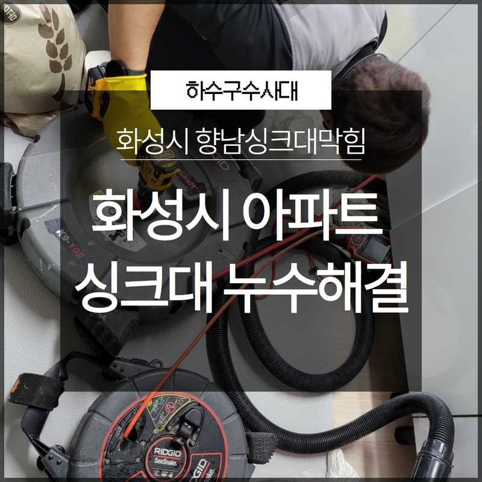
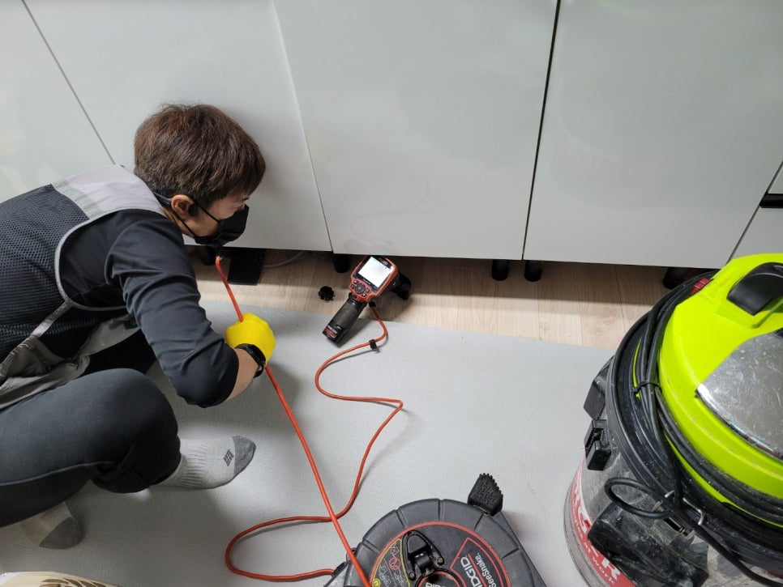
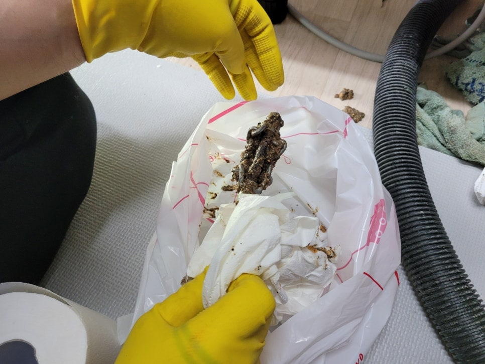
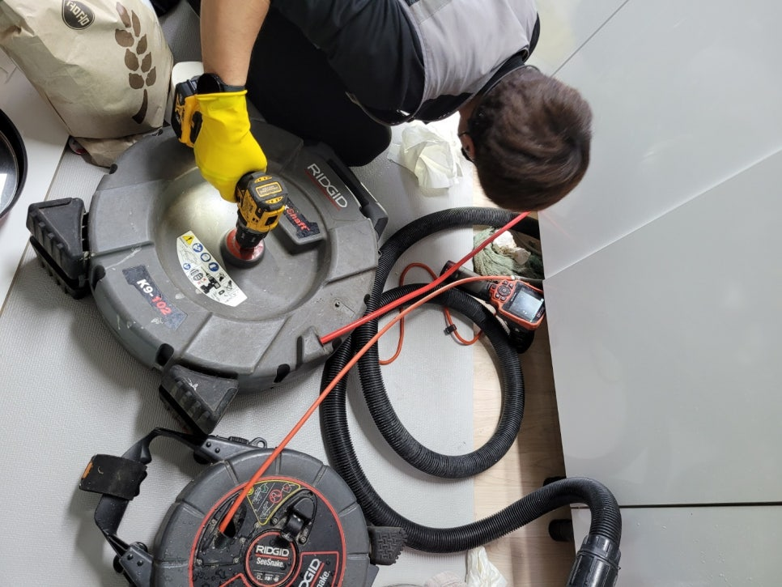
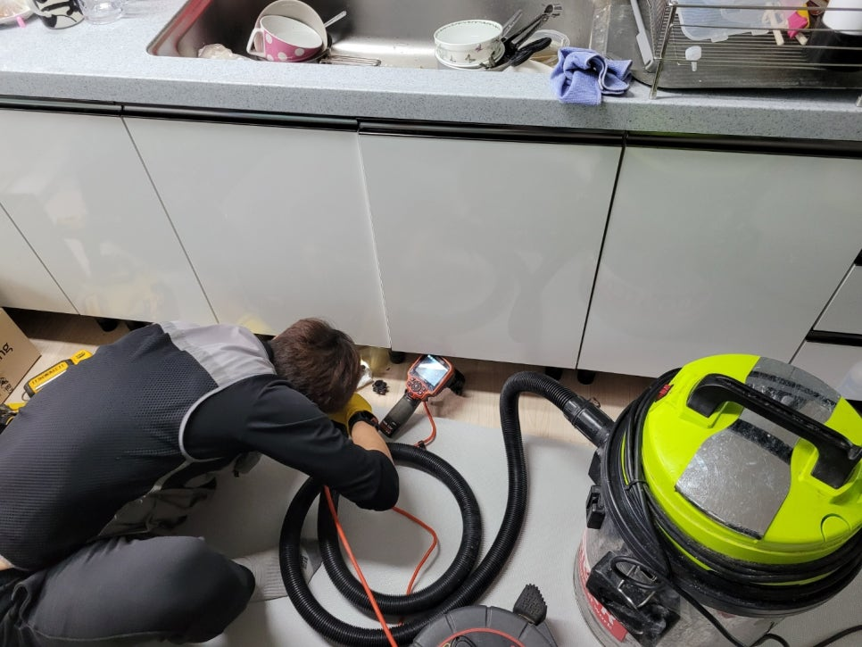

🏠 화성시 향남싱크대막힘 아파트싱크대 누수 손쉽게 해결!
화성 향남 싱크대막힘 전문 시공 후기

📋 작업 개요
- 위치: 화성 향남, 향남, 화성
- 서비스 유형: 싱크대막힘, 하수구막힘, 배관막힘, 누수수리, 역류해결, 고압세척, 악취차단
- 작업 일시: 2022. 12. 8. 23:15
- 업체명: 하수구수사대 (010-5615-2118)
🔍 문제 상황
안녕하세요. 하수구수사대입니다:)
아파트 등 일반 가정에서 싱크대에 문제가 생겨 누수가 발생하거나 음식 찌꺼기로 인해 역류하는 현상이 발생하면 난감하고 어떻게 해결해야 할지 막막합니다. 화성시 향남싱크대막힘 아파트싱크대 누수가 발생하여 하수구수사대가 현장 방문 후 해결해 드린 사례를 안내해 드리겠습니다.
갑작스러운 문제들이 발생하면 당황하기 쉬워 주위의 사소한 문제들을 바라보기 어렵습니다. 보통의 모든 문제들이 그렇습니다. 그러나 막상 문제 해결이 끝나다 보면 주변의 사소한 부분들이 눈에 들어오기도 합니다. 많은 문제들은 약간의 시간을 두고 작은 것부터 챙기다 보면 해결이 가능하다는 것을 다시 한번 배울 수 있습니다.
가정에서 음식을 조리하는 일은 일상생활입니다. 그러나 재료를 손질하고 식기를 세척하는 과정에서 하수구 관리를 철저하게 하지 않으면

🔎 원인 분석
💡 전문가 진단: 화성시 향남싱크대막힘 아파트싱크대 누수가 발생해서 현장을 확인한 결과
싱크대가 막히거나 누수 현상이 발생할 수 있습니다. 일상적으로 자주 발생하는 상황은 아니기에 문제 발생 시 당황하기 쉽기 때문에 평소 관리가 더욱 중요합니다.
화성시 향남싱크대막힘 아파트싱크대 누수가 발생해서 현장을 확인한 결과
싱크대에 물이 넘치고 아랫집으로 물이 흐르는 배관도 배수가 원활하지 않아 당황하시면서 해결을 못해 어쩔 줄 몰라 하셨습니다. 이렇게 하수관의 이상 문제가 발생해 배수상황이 평소와는 다른다는 것을 발견할 경우 전문 업체와 즉시 상담하여 처리하시는 것이 적절한 조치가 가능할 수 있습니다.
보통의 사람들은 배관 상태를 잘 알지 못해 작은 문제도 크게 와닿을 수 있습니다.

🔧 작업 과정
싱크대 역류 문제는 물뿐만 아니라 각종 오염물이 함께 역류하면서 심한 악취가 발생하기도 합니다. 아파트는 대부분 공동배관을 사용하기에 싱크대가 막혔다면 가장 저층부터 역류 현상이 일어납니다. 공동 배관을 사용할 경우 모두 함께 관리를 잘해주지 않으면 쉽게 이물질이 쌓여 막힘 현상이 발생합니다. 물의 사용이 없는데도 불구하고 역류 현상이 발생하는 아파트 저층 거주자라면 공동 배관의 문제 발생을 생각해 볼 수 있습니다.
단순한 해결로 임시 조치를 하는 것은 완전한 해결이 아니기에 현상이 반복됩니다. 간단한 조치로는 오랜 시간 쌓인 이물질의 완벽히 제거하기 힘들기에 하수구 전문 업체의 도움을 받는 것을 추천해 드립니다. 전문 업체인 하수구수사대에서는 전문 장비를 보유하고 있어 내시경 카메라를 이용해 문제가 발생한 배관의 원인을 정확히 진단해서 반복된 문제 발생을 차단할 수 있습니다.
화성시 향남싱크대막힘 아파트싱크대 누수 상황이 심각하다면
고압 세척을 통해 강한 압력으로 이물질 제거가 가능하도록 도울 수 있습니다. 만약 공동배관이 막혀 역류 현상이 발생한 것으로 확인된다면 배관을 사용하는 세대 거주자 모두가 함께 비용을 부담하는 것이 원칙입니다. 문제 발생을 확인하고 의뢰를 했다고 해서 특정 세대가 부담해야 하는 것은 아니니 큰 걱정은 안 하셔도 되겠습니다.
역류 현상은 저층부터 발생하기에 실질적인 피해가 없는 고층 거주자는 비용 부담을 거주하는 경우도 종종 발생하기에 사전에 모든 세대의 협의를 거쳐 진행하는 방법을 권유해 드립니다. 만약 화성시 향남싱크대막힘 아파트싱크대 누수 발생 비용에 대한 적절한 협의가 불가능할 때에는 하수구수사대에 도움을 청해 문제의 발생이 공동배관에 있다는 것을 입증한다면 원만한 해결도 가능하다는 점 참고하시면 되겠습니다.
아파트 하수구 막힘이나 역류 현상이 발생하였을 때에는 당황하지 마시고 먼저 전문 업체에 상담을 받으시는 것이 좋으며


✅ 작업 완료
언제든 편하게 문의하시면 하수구수사대에서 자세하게 도움드리겠습니다.
경기도 화성시 향남읍 상신하길로298번길 7-11 8층 805호




⚠️ 베란다 누수 및 방수 관리 방법
- ✅ 비가 많이 올 때 창틀 주변이나 아래층 천장에 얼룩이 생기는지 정기적으로 확인해 보세요.
- ✅ 우수관 주변 실리콘 마감이 들뜨거나 깨진 틈새가 있는지 손상 여부를 수시로 체크하세요.
- ✅ 베란다 바닥 타일의 줄눈(메지)이 소실되면 그 틈으로 물이 침투하여 누수가 유발됩니다.
- ✅ 누수 의심 증상 발견 시 방치하면 아래층 손실이 커지므로 즉시 전문가의 진단을 받으십시오.
💡 핵심 정리
- 확실한 장비 작업(내시경 점검 및 샤프트 스케일링)으로 원인을 뿌리 뽑습니다.
- 작업 후 1년 이내에 동일한 부위 재발 시 100% 무상 A/S 서비스를 보장합니다.
- 서울 · 경기 · 인천 전 지역에 24시간 언제든 긴급 출동할 수 있도록 항시 대기 중입니다.
❓ 자주 묻는 질문 (FAQ)
🚨 화성 향남 싱크대막힘 문제로 고민이신가요?
정확한 원인 진단과 확실한 시공으로 재발 없는 해결을 약속드립니다.
24시간 긴급 출동 | 서울 · 경기 · 인천 전지역 | 1년 내 재발 시 무상 A/S